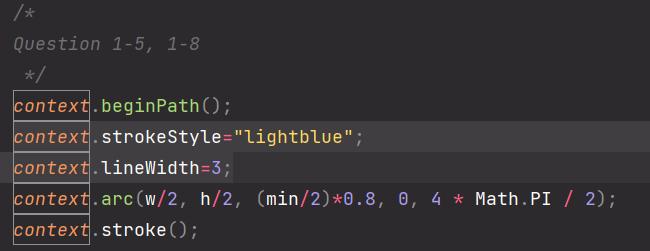
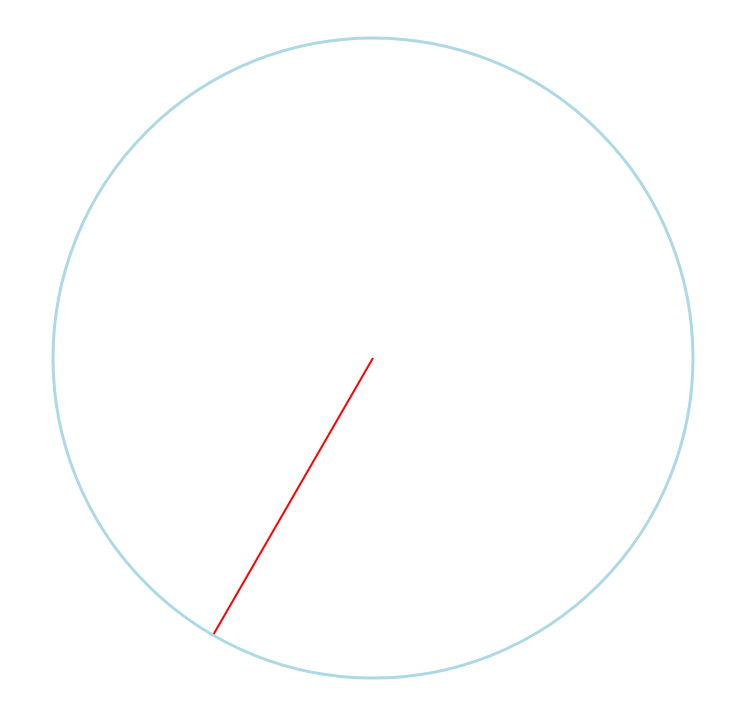
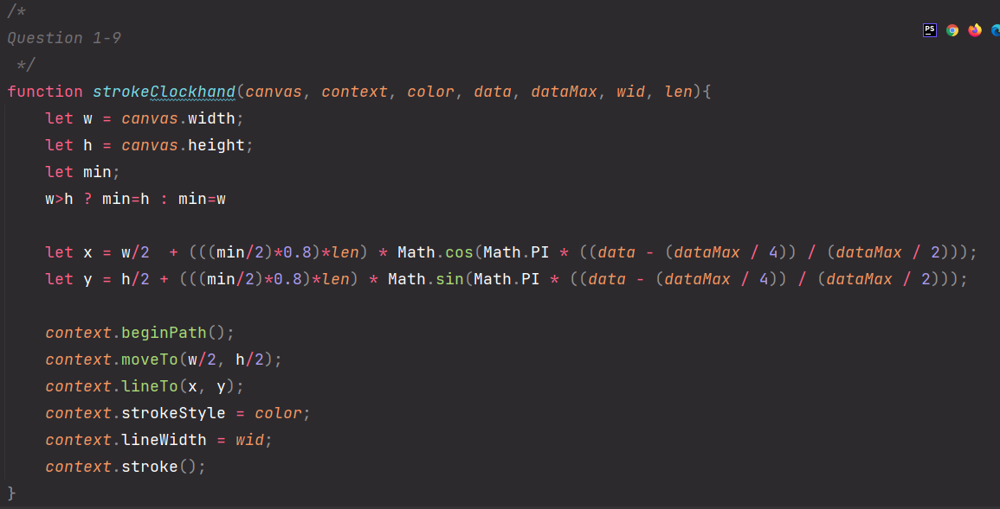

Exercice 1 - Horloge
-
Que se passe-t-il lorsque l'on la visualise ?
En inspectant la page, on remarque la présence d'une zone "canvas" dans le corp de la page, ainsi qu'une partie de script dans la partie d'en-tête.
Dans l'onglet "console" disponible dans le devkit de n'importe quel navigateur web moderne, on peut observer le script en action.
On remarque qu'un message "tick !" est référencé au sein de cet onglet.
Expliquez ce que fait window.onload = loaded et window.setTimeout(refresh, 1000) ?
Le gestionnaire d'évènement "onload" permet d'effectuer une action uniquement une fois que la page a fini de charger.
La méthode setTimeout permet d'exécuter une fonction ou un morceau de code une fois le délai spécifié expiré.
Dans notre cas, une fois qu'une seconde est écoulée depuis que la page est entièrement chargée, la fonction "refresh" va être exécutée, et afficher le message "tick !" dans la console. -
Transformez le code pour utiliser window.setInterval().
On remplace l'appel "window.setTimeout" par celui demandé, afin d'appeler la fonction "refresh" chaque seconde.
On obsèrve ci-dessous le résultat obtenu dans la console après un peu plus de deux minutes d'attente.
On constate qu'il y a eu "161" affichage de "tick !" dans la console.
-
Transformez le code pour afficher la date courante avec new Date().
Pour ce faire, on remplace le contenu de la méthode console.log (texte "tick !") par la date.

Changez le code pour afficher l'heure, les minutes et les secondes sur la console.
On créer la date au sein d'une variable "let".
On concatène les méthodes demandées, en séparant chacune par ":", afin d'obtenir un affichage réaliste.
-
Récupérer le canvas à partir de son id et récupérer le context associé.
On récupère l'élement au travers de la méthode "document.getElementById()".
On passe l'id du canvas à la méthode, afin de récupérer lb non élément.
On récupère ensuite le contexte de la variable contenant le canvas.Passer le canvas et le context en paramètre de la fonction refresh et dans refresh afficher sur la console la largeur (width) et la hauteur (height) du canvas.
On rajoute à la méthode setInterval les deux arguments que l'on souhaite passer (ajoutés en paramètre de la fonction "refresh" au préalable).
Une fois que ces variables ont été passées en paramètres, on utilise la variable "canvas" afin d'extraire la largeur et la longueuer du canvas.
On récupère ces valeurs au sein d'un "console.log" afin d'afficher ces valeurs dans la console.
Modifier la fonction refresh pour afficher une aiguille indiquant midi (ou 0 minute, ou 0 seconde).
On effectue un tracé dans le canvas.
On définit d'abord que l'on souhaite obtenir un tracé de couleur noir et d'épaisseur 2 pixels.
Ensuite, on positionne le point de départ du tracé au milieu du canvas (largeur/2 et hauteur/2)
Enfin, on effectue un tracé jusqu'a 100 pixels au dessus du point de départ (ligne droite pointant vers "0" d'une horloge).
-
Dessinez un cercle de rayon radius pixels centré dans le canvas, avec radius égal à 80% du minimum entre la largeur (canvas.width) et la hauter canvas.height du canvas.
On commence par placer au sein d'une variable la valeur minimale entre hauteur et largeur du canvas.
Ensuite, on trace un cercle via la méthode "arc".
On place le cercle au centre du canvas (hauteur et largeur /2).
On souhaite que la radius soit 80% du côté le moins grand du canvas. On utilise donc le contenu de la variable "min" qui a servi à comparer la hauteur et largeur du canvas.
L'angle de départ sera 0, et ira jusqu'a 4*PI/2 afin de former un cercle complet.
-
Indiquez les formules mathématiques qui permettent pour une valeur de 0 à 60 secondes de trouver les coordonnées x et y du sommet de l'aiguille.
La formule est la suivante:
x2: milieu de la largeur + ((minimale / 2) * 0.8) * cos(PI * (seconde - 15) / 30)
y2: milieu de la hauteur + ((minimale / 2) * 0.8) * sin(PI * (seconde - 15) / 30)
(minimale = valeur minimale entre hauteur et largeur du canvas) -
Modifiez le code pour faire bouger la trotteuse (nom de l'aiguille des secondes) en fonction des secondes.
On modifie les arguments passés à la méthode lineTo traçant la ligne représentant l'aiguille. On lui passe la formule du dessus.
De plus, au début de la fonction refresh, on rajoute un "context.clearRect" afin de supprimer le contenu du canvas avant de ré-afficher la trotteuse (qui aura une nouvelle position).
On spécifie que la totalité du canvas doit être supprimé: D'en haut à gauche (x0 y0) au bas à droite (height et width)
-
Modifiez votre code pour afficher la trotteuse en rouge et le cadre en bleu clair.
Réglez à 3 pixels l'épaisseur du trait du cadre.La méthode "context.strokeStyle" permet de modifier la couleur du tracé. On lui passe donc la valeur "red" pour la trotteuse, et "lightblue" pour le cadre.

La méthode "context.lineWidth" permet de définir l'épaisseur du tracé en pixels. Nous voulons un tracé de 3 pixels pour le cadre, on passera donc 3 en argument.
 -
Affichez en plus de la trotteuse, l'aiguille des minutes (la grande aiguille) en noire.
Afin d'éviter la répétition de code, et étant donné qu'une aiguille pour les heures sera surement attendue après, on met en place une fonction dessinant une aiguille.

Cette fonction prendra de nombreux paramètres, permettant d'en modifier l'apparence et la méthode de fonctionnement (de 0 à 24, de 0 à 60...).
Afin de répondre au dernier problème énoncé, on modifie un peu la formule afin que la totalité de la zone de rotation marche pour n'importe quel couple de valeur (valeur et valeur maximale), et non uniquement 60.
En dehors de cela, le comportement de la fonction est relativement similaire au tracé précédent.
Pour finir, on appelle la fonction deux fois, afin de tracer les deux aiguilles.
-
Ajoutez l'aiguille des heures, qui doit être d'une longueur inférieure aux deux autres aiguilles (disons 80%), mais plus large, toujours en essayant de 'factoriser' le code.
Grace à la fonction de tracé, l'ajout de l'aiguille est relativement simplifié.
On se contentera d'appeller la fonction, mais de passer une longueur moindre pour une largeur accrue, ainsi qu'un seuil de valeur vallant 24 .
-
Ajoutez 12 traits de graduation ('ticks') en bleue foncé, autour du cadre de l'horloge. Un trait aura une longueur de 3 pixels.
Afin de simplifier la mise en place, on va créer une fonction dédiée à cette mission.
La fonction prendra plusieurs arguments afin de pouvoir un minimum customiser l'apparence de ces ticks (longueur, épaisseur, couleur, nombre)
Les formules utilisées afin de placer les points de départ et d'arrivée du tracé sont relativement identiques à celles données précédemment.
Cependant, cette fois-ci, on place les instructions de tracé au sein d'une boucle for, afin que le nombre demandé de ticks soit tracés sans avoir à répéter du code.
Pour faire le tracé, on appelle simplement la fonction en lui donnant les paramètres demandés, à savoir 12 traits bleus d'une longueur de 3 pixels